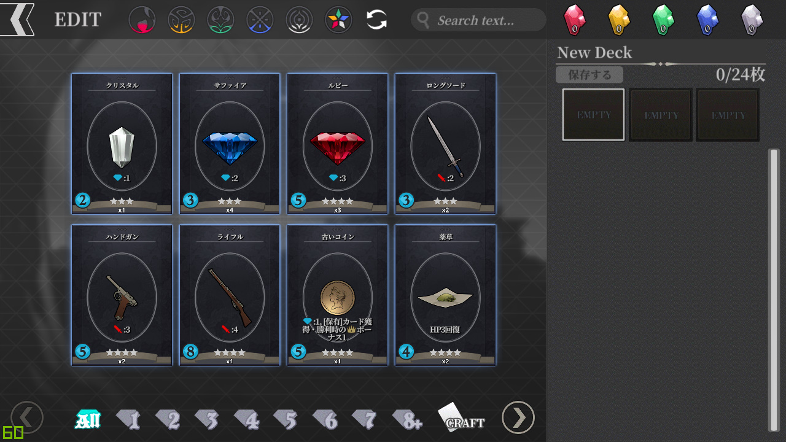
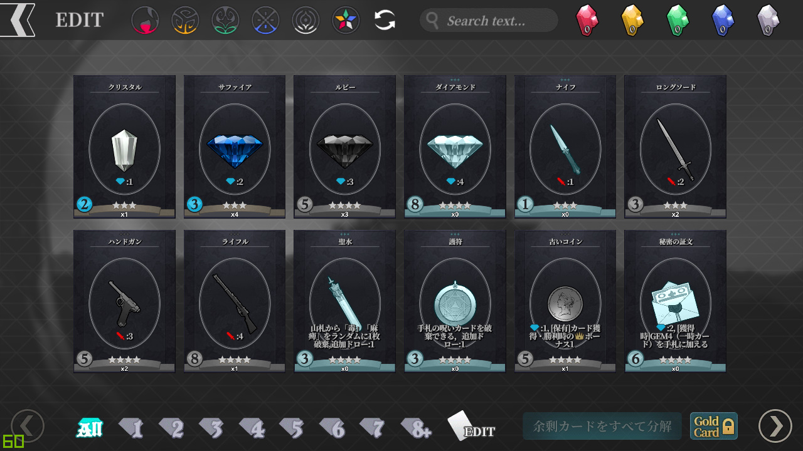
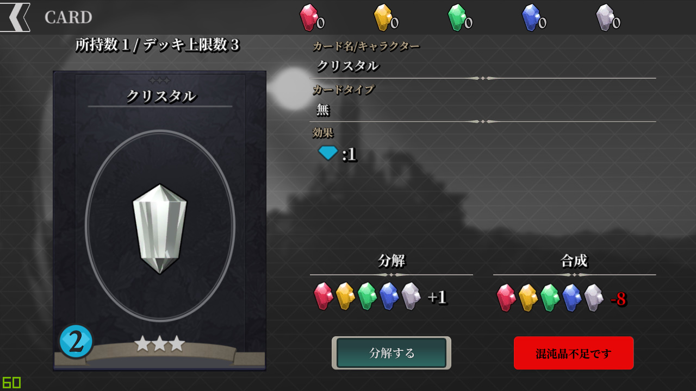
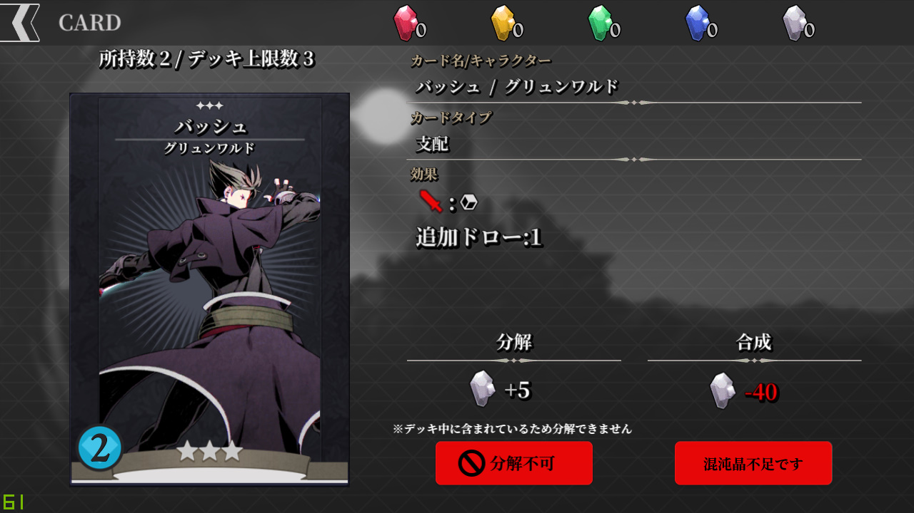
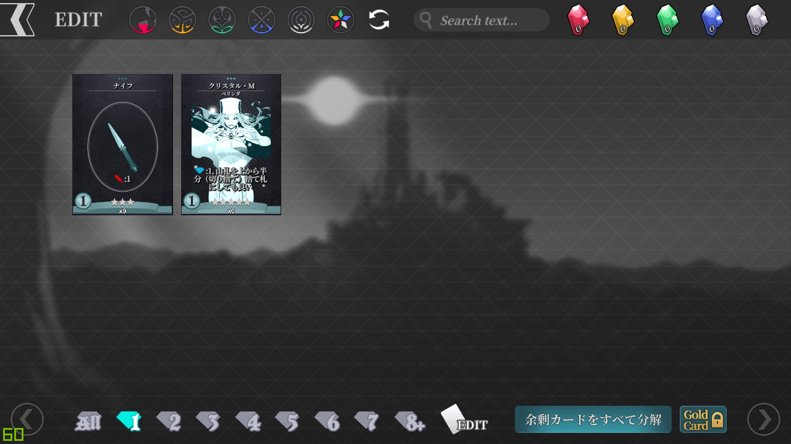
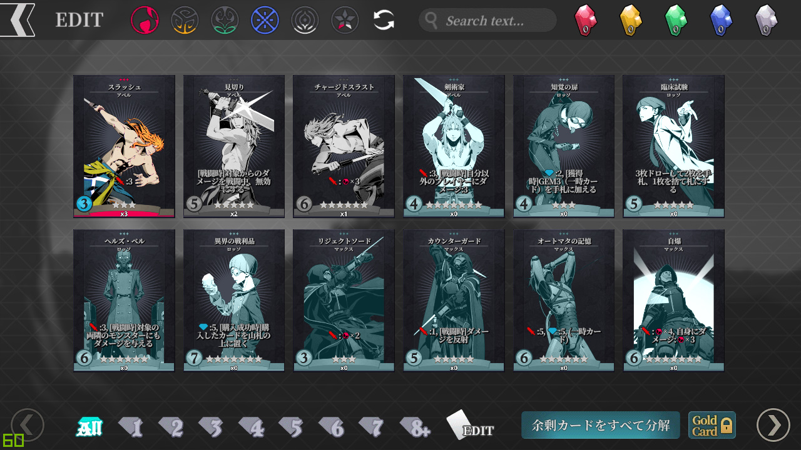
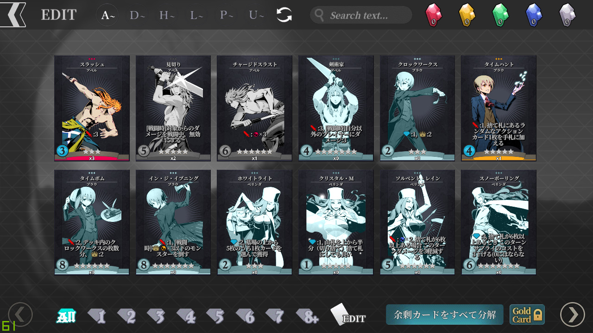
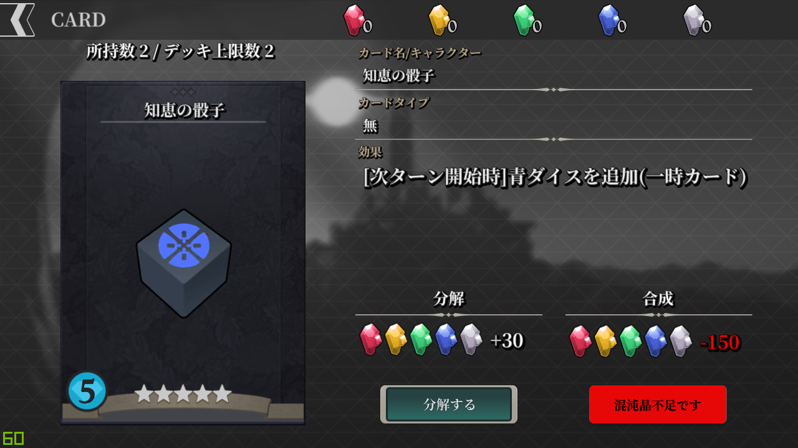

-
카드 합성 및 해체에 대해 알아봅니다.
저장되어 있는 아무 덱을 누르거나 "신규작성"을 눌러, 덱편집 화면으로 들어옵니다.

하단의 "CRAFT"를 누르면 위와 같이 덱편집 UI가 사라집니다.
그리고 방금 눌렀던 아이콘이 "EDIT"으로 변경된 것을 알 수 있습니다.
즉, 방금과 같은 상태가 "EDIT" 모드였고, 현재가 "CRAFT" 모드인 것입니다.
※ 왼쪽 상단의 화살표를 누르면 덱선택 화면으로 돌아갑니다.
-
카드를 읽는 법에 대해 알아봅시다.

"クリスタル(크리스탈)"을 누르면 다음과 같이 "크리스탈" 카드에 대한 정보를 볼 수 있습니다.
※ 왼쪽 상단의 화살표를 눌러 "CRAFT" 화면으로 돌아갈 수 있습니다.
"CRAFT" 모드로 다시 돌아와서, 이번에는 [액션 카드]를 살펴봅시다.

[그룬왈드]의 "バッシュ(배쉬)"를 누르면 위와 같은 화면이 볼 수 있습니다.
[아티팩트 카드]와는 달리 카드 이름 옆에 캐릭터의 이름이 표기되어 있습니다.
카드 종류에도 "支配(지배)"라고 표기된 것을 볼 수 있습니다.
또한 "분해불가" 버튼 위에 "※덱에 포함돼있는 카드는 분해할 수 없습니다"라는 문구가 떴습니다.
이 문구는 보유중인 해당 카드가 모두 덱에 추가되어 있을 경우 등장합니다.
위와 같은 방법으로 카드들의 정보를 확인할 수 있습니다.
모든 카드들의 효과를 본 가이드에서 작성하는 것은 비효율적이기에 생략합니다.
각 카드의 효과는 나무위키의 "스키조크로니클" 항목을 참고하기 바랍니다.
-
카드를 정렬하는 법에 대해 알아봅시다.

하단의 숫자 1이 적힌 GEM 아이콘을 누르면 위와 같은 화면이 등장합니다.
구매력 1로 구매할 수 있는 카드들만 보여주는 것입니다.
이 상태에서 하단의 숫자 5가 적힌 GEM 아이콘을 누르면 위와 같은 화면이 됩니다.
구매력 1로 구매할 수 있는 카드들과 구매력 5로 구매할 수 있는 카드들을 보여줍니다.
가격이 5인 카드들만 보려면, 숫자 1이 적힌 GEM 아이콘을 눌러 꺼버립니다.
위의 화면처럼 가격이 5인 카드들만 볼 수 있게 됩니다.
다시 All이 적힌 GEM 아이콘을 눌러 돌아옵시다.
이처럼 가격에 따라 카드를 정렬할 수 있습니다.
상단에서 캐릭터의 색에 따라 정렬할 수 있는데, 적색을 선택하면 위와 같은 화면이 뜹니다.

색에 따른 정렬도 가격에 따른 정렬처럼, 중복이 가능합니다.
청색을 연달아 선택하니, [로쏘]가 중간에 끼어들어온 것을 볼 수 있습니다.
오색별 아이콘, 즉 [와일드]를 눌러 다시 돌아옵니다.
[와일드] 옆에 있던 새로고침 모양의 아이콘을 누르면, 캐릭터를 이름순으로 정렬하는 옵션이 등장합니다.

"A~"를 누르면 위와 같이 이름이 "A" "B" "C"로 시작하는 캐릭터의 [액션 카드]들만 표시됩니다.
※ 이름 정렬 내에서는 또 다시 업데이트순으로 정렬됩니다.
"D~"를 누르면 "A~"가 비활성되고 이름이 "D" "E" "F" "G"로 시작하는 캐릭터들이 등장합니다.
"D~"를 다시 눌러 정렬 옵션을 풉니다.
상단의 새로고침 아이콘을 누르면 다시 최초 상태로 돌아옵니다.
이상으로 카드를 정렬하는 법에 대해 알아보았습니다.
-
카드의 합성과 해체에 대해 알아봅시다.

임의의 카드를 하나 해체해보겠습니다.
저는 "知惠の骰子(지혜의 주사위)"를 선택했습니다.
"카드를 분해하여 [혼돈수정]을 생성합니다. 하시겠습니까 ?"라고 묻는 창이 뜹니다.
"Yes"를 누릅니다.
화면 오른쪽 상단의 [혼돈수정]의 개수가 증가한 것을 볼 수 있습니다.
해당 카드를 분해할 경우 모든 색의 [혼돈수정]을 30개씩 획득할 수 있다고 표기되어 있던 대로 된 것입니다.
그리고 화면 왼쪽 상단의 "소지수"가 2에서 1로 줄어든 것을 알 수 있습니다.
"CRAFT" 모드로 돌아옵니다. 이번에는 자동해체를 해봅시다.
화면 오른쪽 하단의 "余剩カドをすべて分解します(잉여카드를 모두 분해합니다)"를 누릅니다.
※ "소지수"가 "덱 상한수"보다 높은 카드가 없는 경우, 해당 버튼은 비활성되어 누를 수 없습니다.
"余剩カドの分解(잉여카드의 분해)"의 제목과 "잉여카드를 모두 분해합니다"의 문구 밑으로 획득할 수 있는 [혼돈수정]의 개수와 "[혼돈수정]을 표기된 수만큼 얻습니다"라는 문구가 적혀있습니다.
"キャンセル(cancel)"로 취소하거나 "分解する(분해하기)"로 분해할 수 있습니다.
"분해하기"를 누르니 오른쪽 상단의 [혼돈수정]의 개수가 늘어났음을 알 수 있습니다.
이처럼 "소지수"가 "덱 상한수"보다 높은 카드에 대해 일괄적으로 분해를 시행할 수 있습니다.
오른쪽 하단의 자물쇠와 "Gold Card" 문구가 적혀있는 버튼을 눌러 자동해체 대상에 [골든 카드]를 포함시키거나 제외시킬 수 있습니다.
자물쇠가 걸려있는 경우 자동해체로는 [골든 카드]를 해체할 수 없고, 반대의 경우 해체할 수 있습니다.
※ 위의 두 스크린샷을 비교해 버튼의 상태를 확인할 수 있습니다.
임의의 카드를 하나 합성해보겠습니다.
저는 "크리스탈"을 선택했습니다.
"[혼돈수정]을 소비해 카드를 합성합니다. 하시겠습니까 ?"라고 묻습니다.
"Yes"를 눌러 진행합니다.
오른쪽 상단의 [혼돈수정] 개수가 줄어들었고 "소지수"가 증가했음을 알 수 있습니다.
이상으로 하위메뉴 []편을 마칩니다.
하위메뉴 []편으로 내용이 이어집니다.
-
[ 준비 중 ]